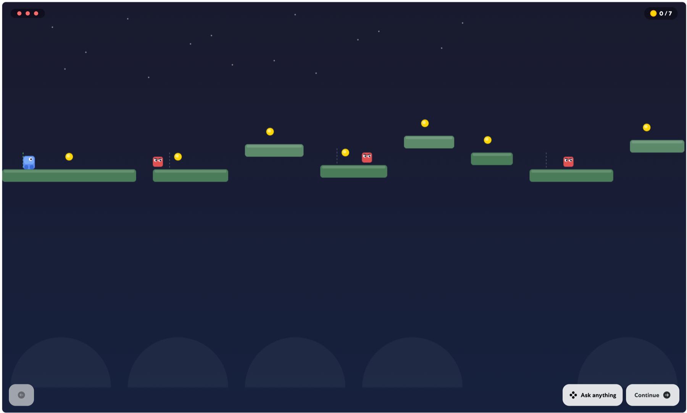

This week’s learning
From AI tool
to experience designer
While I have been out of the office this week, I have taken some time to explore how quickly AI platforms are changing and what this could mean for the way we design learning.

I have watched Sana develop from what initially felt like an AI tool for generating learning content into something much more rounded: a platform that can help us design complete learning experiences.
It is no longer only about asking AI to produce text, summaries or questions. We can now begin to combine information, interaction, navigation, games and learner support within the same experience.
This week, I focused on exploring some of the interactive experiences that can now be created inside Sana.
One example was a playable platform game where the learner controls a character, moves between platforms, collects coins, avoids enemies and progresses towards a final destination. An AI assistant remains available throughout the experience to provide help when needed.
In the past, creating even a basic learning game or simulation could have taken months. A more ambitious experience might have required specialist developers, designers and animators, as well as a significant budget, before we could even test whether the original idea worked.
Today, we can turn an idea into a playable prototype in minutes or hours.
This does not mean that a finished and reliable learning product requires no effort. It still needs testing, refinement, accessibility checks and careful learning design. However, the cost of exploring an idea has changed dramatically. We can now see an experience, interact with it and improve it before committing to a large production.
Designing with purpose
Familiar game elements can represent much more than entertainment.
The Sana platform game was a particularly interesting example. Each characteristic can be connected to a learning purpose.
Character
The player’s character can represent the learner’s journey through a challenge.
Coins
Collectables can become pieces of evidence, knowledge or components of a strong AI prompt.
Platforms
Platforms can represent different stages in a process and make progression visible.
Enemies
Hazards can represent bias, hallucinations, vague instructions or unchecked assumptions.
Routes
Different paths can introduce choices and trade offs, while checkpoints create opportunities for feedback and reflection.
AI support
The assistant can offer hints, ask questions and help learners recover without simply giving them the answer.
This helped me recognise an important distinction. Adding game elements does not automatically create meaningful learning.
Collecting coins is only valuable if those coins represent something the learner needs to understand or apply. Avoiding an enemy matters when that enemy represents a realistic risk. Reaching the end should demonstrate more than the ability to complete a level. It should show that the learner can make a better decision.
The key question
Not simply, “How can we turn this content into a game?”
How can the mechanics of the game allow someone to practise the behaviour we want them to develop?
My biggest learning this week is that AI is changing the role of the learning designer.
We are moving from describing experiences and handing them to others to build, towards being able to prototype, test and improve those experiences ourselves.
The technology can help create the environment, the interaction and the navigation. Our responsibility is to provide the purpose: the right challenge, meaningful choices, credible consequences, useful feedback and a clear connection to real performance.
The real opportunity is not simply to produce learning more quickly. It is to experiment more freely, test ideas earlier and create experiences that previously may never have progressed beyond a concept.